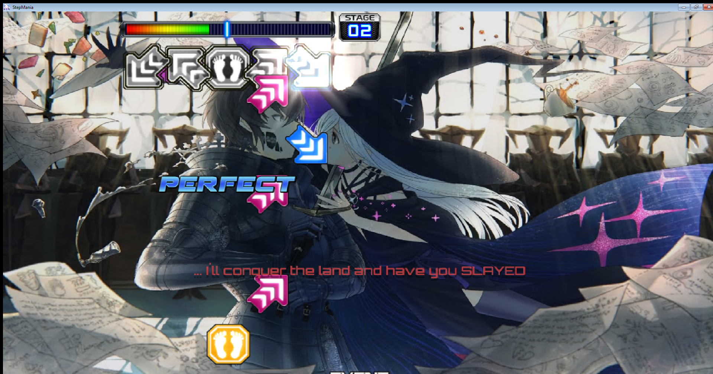
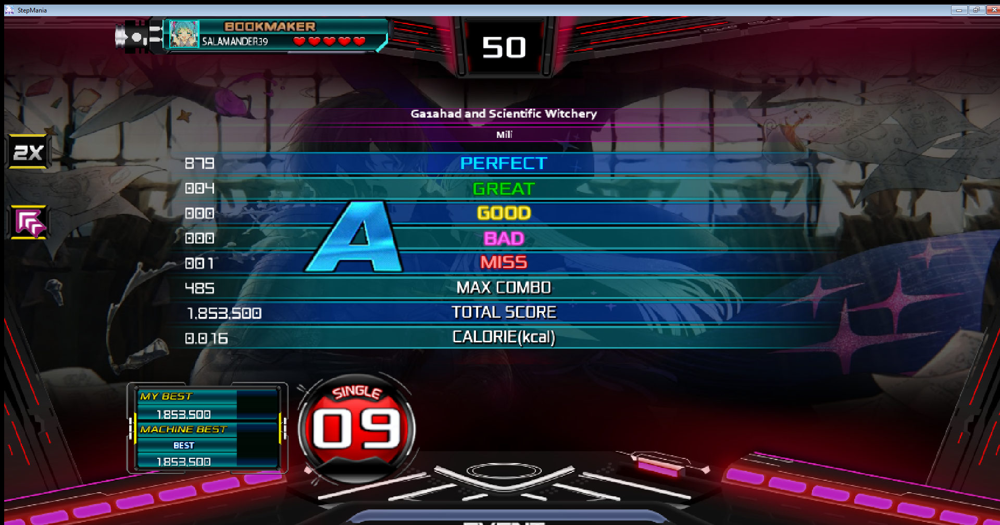

Profil
Nama:Erik Ferisman Sumampouw

Hobi:
- Mendesain dan Membuat Level Game
- Merancang dan Membuat Pin Lencana
- Merawat Hewan
Keahlian:
- Bahasa: Python, JavaScript
- Framework: React, Laravel
Aktivitas Terakhir:
(11/11/2025) Testing Konten Kustom (Charting) untuk Step Mania
- Artis: MILI
- Judul Lagu: Ga1had and Scientific Witchery
- Tingkat Kesulitan (Level): 9
(9/11/2025) Pengembangan Konten Kustom (Charting) untuk Step Mania
- Artis: MILI
- Judul Lagu: Ga1had and Scientific Witchery
- Tingkat Kesulitan (Level): 9
Testing chart level 09 dalam Step Mania

Preview chart
Skor
Detail Chart:

Pembuatan step chart kustom untuk game ritme Step Mania (Personal Use). Proyek ini mencakup analisis beat dan sinkronisasi yang presisi terhadap lagu "Ga1had and Scientific Witchery". Proses "charting" ini memerlukan perhatian detail dalam penempatan not (anak panah) untuk memastikan flow sesuai dengan berbagai tingkat kesulitan.